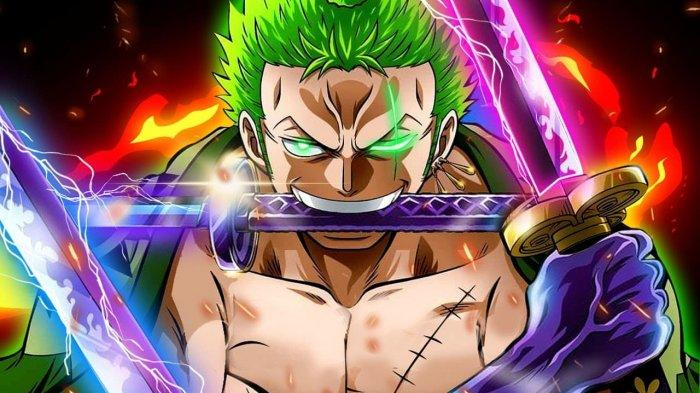

Alias: Pemburu Bajak Laut, Pendekar Tiga Pedang. Jabatan: Petarung, Pendekar Pedang. Tebusan/Bounty: ฿1.111.000.000
Roronoa Zoro (ロロノア・ ゾロ, Roronoa Zoro) adalah seorang karakter di one piece dalam serial anime dan manga One Piece karya Eiichiro Oda. Ia adalah salah satu tokoh protagonis utama. Ia merupakan anggota Bajak Laut Topi Jerami yang pertama kali bergabung dan hingga saat ini ia dinilai sebagai ancaman terbesar dan anggota paling berbahaya dari kelompoknya setelah sang kapten, Monkey D. Luffy. Popularitasnya yang tinggi sebagai seorang ahli pedang dengan kemampuan yang sangat hebat, bersamaan dengan sikap kekanakan dari kaptennya, terkadang membuat banyak orang menyangka bahwa ialah kapten yang sebenarnya atau setidaknya, wakil kapten dalam kelompoknya. Ia merupakan salah satu dari 3 petarung terkuat dalam kelompoknya dengan impian untuk menjadi ahli pedang terhebat di dunia. Zoro diberi gelar sebagai salah satu dari "Sebelas Supernova", yaitu sebelas bajak laut pemula dengan nilai tebusan lebih dari 100.000.000 Berry yang telah mencapai Red Line, di mana miliknya sendiri bernilai sebesar 120.000.000 Berry.
Cita-cita Zoro adalah menjadi pendekar pedang terkuat di dunia yang menjadi cita-cita Kuina juga, sahabat semasa kecilnya yang sudah meninggal. Selain itu dia juga bercita-cita untuk bisa mengalahkan Mihawk salah satu dari anggota sichibukai dan juga sebagai ahli pedang paling tangguh dalam serial ini.
Zoro kecil adalah seorang murid dari perguruan kendo milik ayah Kuina, Koushiro. Zoro ketika masih kecil menggunakan dua pedang, dan sangat terlatih dia bahkan bisa mengalahkan orang dewasa. Satu-satunya orang yang tidak bisa dikalahkan Zoro adalah Kuina, anak gadis sang guru. Zoro dikalahkan Kuina sampai 2000 kali, sampai pada akhirnya Zoro menantang Kuina untuk bertanding dengan pedang sungguhan. Zoro kemudian kalah lagi dan menangis. Setelah itu Kuina memberitahu Zoro kalau pada akhirnya wanita-lah yang akan lemah pada saat mereka menjadi dewasa, kelak dia akan dikalahkan Zoro. Kemudian Zoro kembali berkata pada Kuina kalau dia tidak boleh bicara seperti itu dan berjanji agar terus bertanding sampai siapa di antara mereka berdua yang menjadi pendekar pedang terkuat.
Esok paginya, Kuina meninggal karena jatuh dari tangga rumahnya. Zoro marah dan menganggap kalau Kuina ingin ingkari perjanjian tersebut. Pada akhirnya Zoro menangis sambil meminta pedang milik Kuina dan berjanji untuk meneruskan cita-citanya. Pedang milik Kuina adalah yang ada di mulutnya, Wadou Ichimonji, termasuk 21 pedang tertajam di dunia.
Kisah ini muncul pada cerita bagian Morgan pada manga-nya dan muncul secara terpotong pada cerita bagian Kuro pada anime-nya.
Ketika beranjak dewasa, Zoro mulai meninggalkan tempat tinggalnya dan mencari orang yang dikabarkan sebagai pendekar pedang terhebat di dunia, Juraquille Mihawk salah seorang anggota Shichibukai dan seorang anak muda yang memiliki pedang Api dan Es yang bernama "Kyu". Kyu adalah seorang anak mudah yang memimpin salah satu Organisasi Jepang yaitu Harajuku (dalam cerita ini Harajuku adalah organisasi Style Pedang) Pemuda ini mempunyai dua pedang yang luar biasa, pedang itulah yang memotong pohon setan api (suna-suna) dan pohon setang Es (hie-hie). Hingga kedua pedangnya itu menjadi Api dan Es. Kekuatan kedua pedang ini anehnya lagi bisa menyatuh ke tubuh penggunanya tapi dengan tidak bersamaan dengan kata lain bila penggunanya mengeluarkan pedang api, maka penggunanya akan menjadi api juga. Tapi dalam cerita One Piece Kyu belum pernah terlihat karena Kyu bukanlah seorang Pemerintah ataupun Bajak Laut.
Zoro mengarungi lautan dan untuk bertahan hidup, dia memperoleh uang dari hasil memburu bajak laut yang berada di daftar buruan pemerintah. Pada saat inilah Zoro bertemu dua orang pemburu hadiah kecil bernama Johnny dan Yosaku. Mereka bekerjasama dengan Zoro sebentar. Nama Zoro juga menyebar sampai ke telinga Baroque Works dan mereka mengirim agen (Mr.7) untuk meminta agar Zoro bergabung. Zoro setuju untuk bergabung asalkan ia dijadikan sebagai pimpinan Baroque Works, namun Mr. 7 menolak sehingga terjadi pertempuran antara keduanya yang kemudian dimenangkan oleh Zoro.
Zoro kemudian ditangkap angkatan laut karena membunuh serigala milik Helmeppo (Soro), putra kapten Angkatan Laut Morgan.
Nama Zoro sang pemburu perompak sangat terkenal di East Blue, bajak laut besar mengenalinya seperti Buggy, Arlong dan Krieg.
Pertarungan Zoro melawan bajak laut besar disaksikan oleh Robin, yang akhirnya menyampaikan kepada Nico, yang selanjutnya Nico dikenal sebagai Nico Robin yang akan diselamatkan oleh Zoro.
Pulau Kuragaina merupakan reruntuhan kaerajaan Shikkeru. Dahulu di kerajaan ini terjadi perang saudara yang sangat menakutkan. Di pulau ini juga terdapat sejenis babun yang mampu meniru perilaku manusia. Babun ini mampu meniru perilaku penduduk Shikkeru yang pandai memainkan pedang, akibatnya babun ini pun menjadi ahli pedang. Zoro pun diserang kawanan babun ini. Selain itu pulau ini juga merupakan kediaman pribadi Mihawk, Mihawk kemudian memberi perahu pada Zoro untukberlayar kembali ke Pulau Shabaody tapi perahu itu dirusak oleh para babun. Zoro yang terluka parah kemudian meminta Mihawk untuk mengajarinya bermain pedang karena mengira kekutannya belum sebanding dengan Mihawk walaupun berhasil mengalahkan para babun. Mihawk yang kemudian mengajari Zoro bermain pedang yang lebih baik. 2 tahun kemudian zoro kembali ke Shabaudy Archipelago. di sana Zoro memperlihatkan kekuatannya selama latihan dengan Mihawk dengan membelah sebuah kapal galeon dengan sekali tebasan.
Haki adalah Kekuatan ada disemua manusia tetapi tidak banyak yang mengetahuinya, haki merupakan tenaga ambisi yang dimiliki seluruh mahluk hidup,hanya beberapa orang yang mampu menguasai nya(mengendalikan nya). ada 3 kekuatan Haki
Kenbunshoku Haki : Haki yang bisa menebak pikiran musuh dan mengetahui letak musuh, yang pernah terlihat menggunakan ini adalah God Enel, Luffy, Sanji, Silver Rayleight, dan Shanks. Zoro menggunakan kekuatan ini saat menghindari Teknik Yabusame milik Hody.
Busoshoku Haki : Haki yang bisa menyentuh pengguna Buah Setan, juga bisa digunakan untuk perisai tidak terlihat, yang pernah terlihat menggunakan kekuatan ini adalah Smoker, Shirohige, Luffy, Sanji, Tralfargar Law, Silver Rayleight, Tashigi, Doflamingo, dan masih banyak lagi. Zoro sering menggunakan kekuatan ini yang dipadukan dengan kemampuan teknik pedangnya, sehingga menghasilkan efek serangan yang luar biasa.
Haoushoku Haki : Haki level tinggi yang dikatakan hanya dimiliki satu dari sejuta orang. Sampai saat ini, yang pernah terlihat menggunakan kekuatan ini adalah Shanks si Rambut Merah, Silvers Rayleight, Monkey D. Luffy, Portgas D. Ace dan Boa Hancock. Selain itu, Roronoa Zoro pun memiliki kekuatan ini yang dikeluarkan bersama teknik Santoryuu ketika melawan naga di pulau panas Punk Hazard dan teknik Ittoryuu saat menebas Monet. Meskipun berhasil membuat monet tidak bisa bergerak dan ketakutan, namun Haki ini belum bisa dikuasai Zoro sepenuhnya. Hal ini belum bisa dipastikan sepenuhnya karena belum ada konfirmasi langsung dari sang penulis.